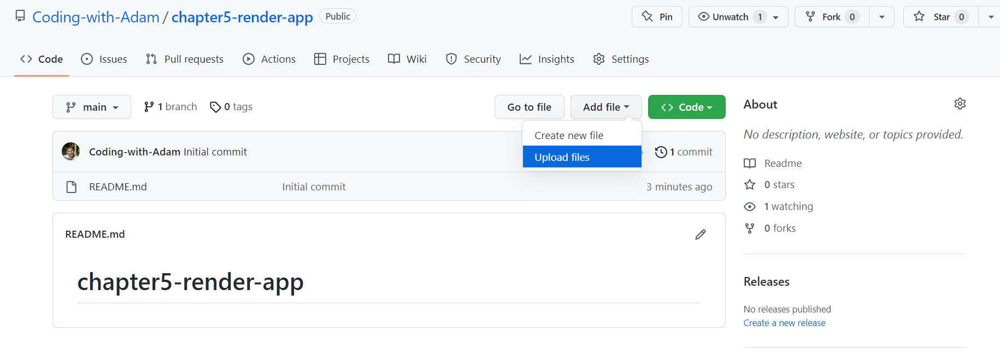
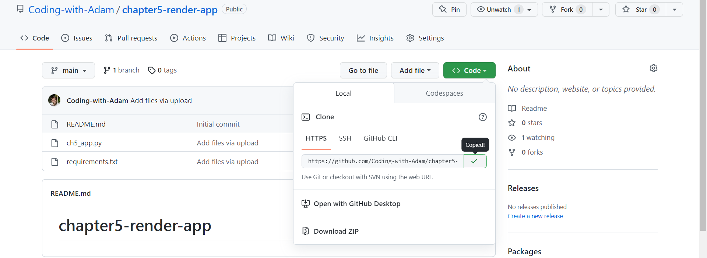
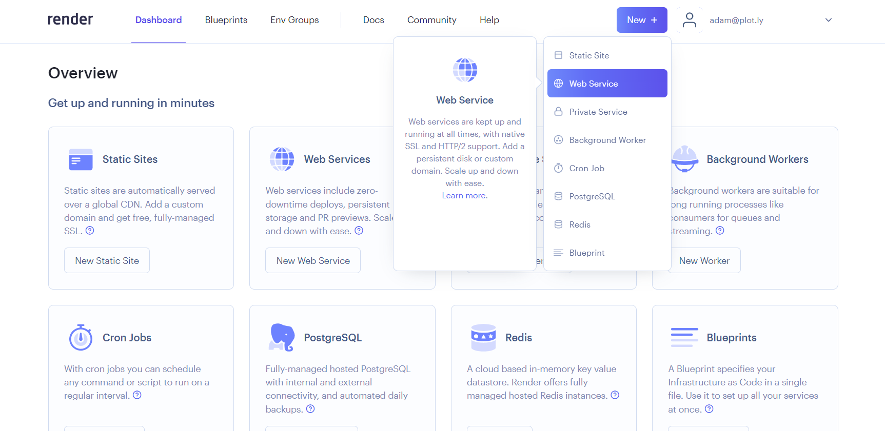
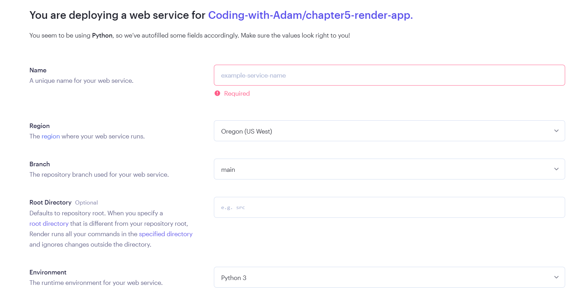
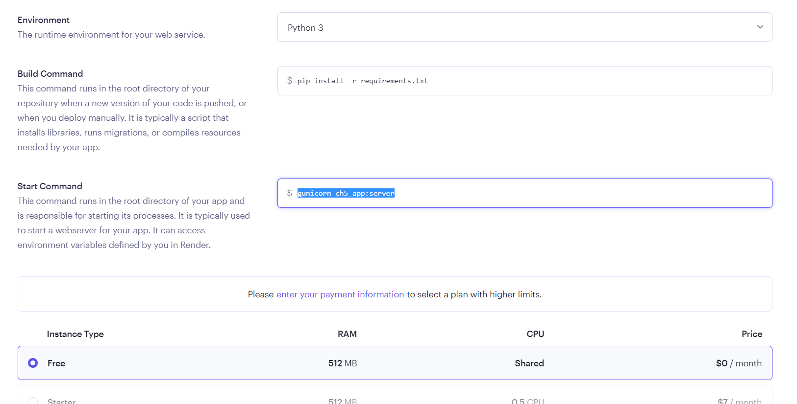
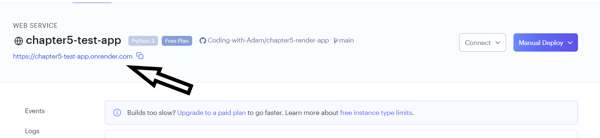

Chapter 5 - App Deployment
Contents
Chapter 5 - App Deployment¶
What you will learn¶
Running your Dash app on your computer is great, but the magic happens when you deploy your app to the web so you can share it with your coworkers, family and friends! Render is a platform as a service (PaaS) that supports Python; it can be used to deploy and manage public Dash applications. We will use Render to deploy Dash apps to the web.
Learning Intentions
Prepare your app for deployment
how to install Heroku Command Line Interface (CLI)
how to deploy your Dash application to the web publicly using CLI
5.1 Prepare your app for deployment¶
As a framework for this chapter, we will be using the previous app created at the end of chapter on Linking Dash Components.
Create a new folder called “new-chapter5-app”. Save this app inside that folder as ch5_app.py.
Attention
Before continuing, make sure you have already set up a Git version control and a GitHub repository. Also, ensure that your Dash app runs locally on your computer successfully.
This is what your app should look like when you run it on your computer.

5.1.1 Turn off Debugging mode¶
In VScode, open your ch5_app.py script file and turn off the interactive debugging mode with debug=False, as such:
# Run the app
if __name__ == '__main__':
app.run_server(debug=False)
Here is a view of the updated file showing this change in the VScode editor’s main window.

5.1.2 Declare server for Deployment¶
Add the following line of code server = app.server under the line of code that instantiates your Dash app, as such:

Save and close the ch5_app.py file.
5.2 Make a requirements file¶
Render uses the requirements.txt file to know what Python libraries it needs to install in order to run your app on their server.
In the same root folder (new-chapter5-app) create a new file and name it requirements.txt.
Open the file. Type the package names and version numbers of all the packages your app requires to run successfully.
Each package should be its own single line. Include all packages listed in your import statements in your ch5_app.py file, as well as gunicorn.
dash==2.6.1
dash_bootstrap_components==1.0.3
gunicorn==20.1.0
Your requirements file should look similar to the above text. Make sure to replace the specified version numbers to match the package versions that you have installed and are using with your app.
An easy way to check the versions of Python packages you are using is to type the pip list or pip3 list command in your VS Code Terminal window.
If you are deploying an app with Plotly Express graphs, include the pandas library in your requirements list.
Save and close the requirements.txt file.
Note
If you are familiar with virtual environments and have one set up on your computer, there is a quicker way to create the requirements.txt file.
You would need to go to your VS Code terminal; ensure your virtual environment is activated and that you have installed gunicorn.
Then, run this command in the terminal: pip3 freeze > requirements.txt
5.3 Create a GitHub repository¶
Render uses GitHub to connect to the necessary files to run a Dash app. Therefore, the next step is to create a GitHub public repository. To create a public repository, make sure you have an account on GitHub. If not, please create GitHub account now.
Once your account is created, go to “Your repositories” tab and create a new repository by clicking the green “New” button. Name the repository “chapter5-render-app”. Make sure the radio item for a public repository is checked. And then check the box to add a README file. Click the “Create repository” button.
Now that the public repository has been created, you will need to add the ch5_app.py and the requirements.txt files to the repository.
To add these files, click the “Add file” button that is next to the green “< >Code” button. Then, click “Upload files”.

In the next page, drag the ch5_app.py and the requirements.txt files into the box; then, click the green “Commit changes” button at the bottom of the screen.
When you’re back in the main GitHub repository page, you should see a total of 3 files:
ch5_app.py
requirements.txt
Click the green “< >Code” button and then copy the HTTPS link. Save this link in a place you can access later (for example, in a notepad).

5.4 Create a Render account¶
If you have a Render account, you can skip to the next section. If you don’t have a Render account, navigate to Render Register and follow the prompts to create your account. You can use your email and a new password for now. No need to register through GitHub.
It’s free to create a Render account, and a free tier will suffice for the apps in this curriculum.
5.4.1 Start a Web Service¶
Once your account is created, click the blue “New+” button at the top of the screen and then click the “Web Service” option.

Scroll down the page to the “Public Git repository” section and insert your GitHub repository HTTPS link that you saved from the end of section 5.3.
The next page is where you instruct Render on the most appropriate way to connect and deploy your app.
First, select a unique name for your app. You can name it whatever you want as long as it’s available.
Then, select the region of the web service. Normally, it’s good practice to select the closest region to where you are located.

Then, in the “Start Command” section update the gunicorn command to gunicorn ch5_app:server. Let’s break down this command.
gunicorn and :server will rarely change. However, recall that the ch5_app.py is your app file name.
If your app file name is different, you will need to update this section (excluding the .py part).
For example, let’s say my app file was called app.py. Consequently, this section would have been: gunicorn app:server.

Scrool all the way down the page and click the blue “Create Web Service” button.
Render will take approximately 5 to deploy the app to the web. For larger apps, this could take longer.
Once it’s done, click the url at top left corner of the screen to run the app.

5.5 Common errors¶
Common deployment errors you could encounter for this example app include:
Missing a package dependency in your requirements file
Mispelling the
Procfileor the app name inside theProcfileForgetting to add
server = app.serverto your main app file
Refer to the Heroku documentation articles for common error codes and troubleshooting & support.
Note
In addition to minimum requirements, some new Python versions may not yet be supported on Heroku. For example, if Heroku supports Python 3.10.0, and your app is running a newer 3.11 version.
Summary¶
Congratulations! You are now able to share your app with anyone around the world. In the next chapter we will learn how to incorporate data into our Dash app.